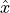
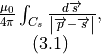
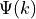
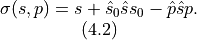
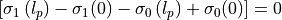
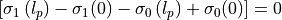
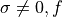
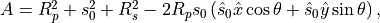

Physics
Self/mutual inductance
The idea behind pycoilib is to compute the inductance of a coil by using the concept of “partial inductance”. In this approach, the coil geometry is divided into a collection of  simple current segments and the total inductance
simple current segments and the total inductance  of the coil is computed using the following equation:
of the coil is computed using the following equation:

where  is the self-inductance of the i<sup>th</sup> segment, and
is the self-inductance of the i<sup>th</sup> segment, and  is the mutual-inductance between the segments
is the mutual-inductance between the segments  and
and  .
.
To compute the mutual  betweenn a primary and a secondary, we use the Neumann double integral formula:
betweenn a primary and a secondary, we use the Neumann double integral formula:
where  and are the oriented paths along the primary and secondary segment, respectively, and is the vacuum permeability. This equation corresponds to the integral over of the magnetic vector potential induced by a unitary current flowing over . The same expression can also be used to compute a segment self-inductance.
and are the oriented paths along the primary and secondary segment, respectively, and is the vacuum permeability. This equation corresponds to the integral over of the magnetic vector potential induced by a unitary current flowing over . The same expression can also be used to compute a segment self-inductance.
Furthermore, the Neumann double integral is perfectly equivalent to the better known surface integral:
with  the magnetic field produced by the secondary over
the magnetic field produced by the secondary over  the primary coil surface. However, this latter expression is impractical when working with complex coil geometries, as a coil surface becomes difficult the properly define.
the primary coil surface. However, this latter expression is impractical when working with complex coil geometries, as a coil surface becomes difficult the properly define.
{kind=link}
Fig. 1 – Schematic view of the segments and their relevant parameters for arbitrary orientations. Current line as (a) the primary circuit and (b) the secondary circuit. Current arc as (c) the primary and (d) the secondary.
Segments parametric equations
To design a coil geometry, Pycoilib includes three kinds of segments: lines, arc, and loops, as shown in the figure below. The segments can touch at their respective endpoints, but they do not cross each other.
In this section (and the followings), we will make extensive use of vector notation. So here’s a few notation conventions:
vectors of arbitrary length are denoted with the arrow symbol:

unit vectors are topped with a hat symbol:

scalar products between two vectors are noted without the ” ”:

cross products are designated with the wedge symbol:

Without any loss of generality, we will assume the primary is centered at the origin  and the secondary is centered at an arbitrary position
and the secondary is centered at an arbitrary position  in the laboratory frame of reference.
in the laboratory frame of reference.
Current line
When the primary is a current line of length (Fig. 1a), its parametric equation can be defined as:
for and where is the line direction.
Similarly, when the secondary is a line segment of length  beginning at (Fig. 1b), its parametric equation reads:
beginning at (Fig. 1b), its parametric equation reads:
for and where is the line direction.
Current arcs and loops
For the primary, we consider an arc of a circle or radius  and subtending an angle (Fig.~1c). A loop is a sub-type of arcs, when The
arc parametric equations are:
and subtending an angle (Fig.~1c). A loop is a sub-type of arcs, when The
arc parametric equations are:
for . The unit vectors  and are orthogonal, their orientation in the laboratory frame is arbitrary, and they define the arc plane.
Similarly, for the secondary, we consider an arc of a circle or radius and subtending an angle (Fig.~1d) and centered at . The parametric equations are:
for . The vectors and play the same role as and for the primary.
General solutions for the first integral
An important aspect of the double integral of Eq. (2.1) is that the
parametric equations of the two segments  and
and  are
independent. Therefore, we can solve the first integral of Eq.~(2.1),
which corresponds to the magnetic vector potential produced by unitary
current circulating along a specific secondary segment while
keeping the details of the primary hidden in the
and
are
independent. Therefore, we can solve the first integral of Eq.~(2.1),
which corresponds to the magnetic vector potential produced by unitary
current circulating along a specific secondary segment while
keeping the details of the primary hidden in the
and  parameters. This
allows a solution for Eq.~(2.1) that can be more easily generalized to
any type of primary .
parameters. This
allows a solution for Eq.~(2.1) that can be more easily generalized to
any type of primary .
In this section, we will solve the first integral of Eq.~(2.1):

for each specific secondary segment described previously.
Then, in the next section, we will present the solutions to Eq.~(2.1)
for the different pairs of segments under study.
When the secondary is a straight wire
To solve Eq.~(3.1) when the secondary is a current line, we begin by replacing and by their respective definition of Eq.~(2.3). The denominator squared of Eq.~(3.1) becomes :
After a change in variable, the denominator can be written in a more compact form:
with,
The proof that , and therefore that  is a
real number, is provided in annex.
is a
real number, is provided in annex.
If , this leads to the following solution:
![\begin{matrix}
\frac{ \mu_0 }{ 4 \pi } \int_{C_s} \frac{ d \overrightarrow{s} }{ \left | \overrightarrow{p} - \overrightarrow{s} \right | } = \hat{s} \frac{\mu_0}{4\pi} \int_{\sigma \left ( 0,\overrightarrow{p} \right ) }^{\sigma \left ( l_s, \overrightarrow{p} \right ) } \frac{{d\sigma}}{\sqrt{\sigma^{2} + \beta^{2} } } = \hat{s} \frac{ \mu_0 }{4\pi}\left\lbrack {asinh}\left( \frac{\sigma\left( l_p,\overrightarrow{p} \right)}{\beta\left( \overrightarrow{p} \right)} \right) - {asinh}\left( \frac{\sigma\left( 0,\overrightarrow{p} \right)}{\beta\left( \overrightarrow{p} \right)} \right) \right\rbrack, \\
(3.5) \\
\end{matrix}](_images/math/7650e1adce7c298d66e0b396b4c33b56cccbbf92.png)
and if , we have:
![\begin{matrix}
\frac{\mu_{0}}{4\pi}\int_{C_{s}} \frac{d\overrightarrow{s}}{\left| \overrightarrow{p} - \overrightarrow{s} \right|} = \hat{s}\frac{\mu_{0}}{4\pi}\int_{\sigma\left( 0,\overrightarrow{p} \right)}^{\sigma\left( l_{s},\overrightarrow{p} \right)}\frac{{d\sigma}}{|\sigma|} = \hat{s}\frac{\mu_{0}}{4\pi}\left( {sign}\sigma\left( l_{s},\overrightarrow{p} \right)\ln\left| \sigma\left( l_{s},\overrightarrow{p} \right) \right| - {sign}\sigma\left( 0,\overrightarrow{p} \right)\ln\left| \sigma\left( 0,\overrightarrow{p} \right) \right| \right). \\
(3.6) \\
\end{matrix}](_images/math/460918a43814a404c731e1b33d2ba15643db1eb1.png)
When the secondary is an arc
In the same manner, for the arc segment, we inject the parametric equations of Eq. (2.5) into Eq.~(3.1). The denominator squared is:
Where,
And using the following transformation:
Eq. (3.1) now reads:
Where
To solve the two integrals of Eq.~(3.9), we further define the following transformation:
The first integral leads to:
where,
The second integral of Eq.~(3.9) can be rewritten as:
where,
and,

are the well-known incomplete elliptic integrals of the first kind
 and second kind .
and second kind .
Using the two following identities:
The integral is:
When the secondary is a loop
A special case arises when the secondary is a complete loop which lead to a simplified version of Eq. (3.19). In this case,
Also, the function  can be re-expressed as a function of the complete elliptic integrals of the first kind and second kind , namely solutions to Eq.~(3.16) when (see Babic emph{et al.} for a demonstration):
This leads to the following equation:
Integral expression for the mutual inductance
We now proceed to give the solution of Eq.~(2.1) for the different
combinations of primary and secondary segments. As the mutual inductance
is symmetric, that is for any segment  and
and
 , we will prefer the simplest equation between two possible
representations.
, we will prefer the simplest equation between two possible
representations.
Pair of lines
For a pair of current lines, we must treat two separate situations. (i) : this corresponds to the special case where , and are three collinear vectors, that is when ; and (ii) otherwise.
When , and are collinear
For the first case, we inject Eq.~(2.2) and Eq.~(3.6) into Eq.~(2.1), leading to the following equation:
with

Using the argument that the two wires cannot be superposed, it can be
proven that does not change sign for
.
Also, using the convention that when , then
, we have the following properties :
 and
.
Finally, noting that and that
 ,
the integral of Eq.~(4.1) takes this analytical form:
and
.
Finally, noting that and that
 ,
the integral of Eq.~(4.1) takes this analytical form:
As a remark, Eq.~(4.2) is undefined for such that . By posing for  can be extended to a continuous function at by posing
General case
For the second case, inject Eq.~(2.2) and Eq.~(3.5) into Eq.~(2.1), leading to the following solution:
where,
The parameter can have one root at:
for which the integrand in Eq.~(4.3) is undefined (c.f. annex), yet
continuous. This problem can be avoided either by extending the
integrand of Eq.~(4.4) to a continuous function at . For a
given  , this problem can be avoided by setting a lower bound
, this problem can be avoided by setting a lower bound
 on such that .
on such that .
A loop and an arc or a loop
We assume the loop to be the secondary coil. Injecting Eq.~(2.4) and Eq.~(3.22) into Eq.~(2.1) gives:

where was defined in Eq.~(3.21) and:

If ,
, and  , this
equation corresponds to the case treated by Babic emph{et al.} in their
2010 paper.
, this
equation corresponds to the case treated by Babic emph{et al.} in their
2010 paper.
Pair of arcs
In this situation, we need Eq.~(2.4) and Eq.~(3.19). This mutual inductance is:
![\begin{matrix}
M_{p,s} = \frac{2\mu_{0}R_{s}R_{p}}{\pi}\int_{0}^{\theta_{1}}{\frac{1}{k^{2}d\sqrt{A + d}}\begin{bmatrix}
\left( \left( - \hat{u}\hat{x}B - \hat{v}\hat{x}C \right)\sin\theta + \left( \hat{u}\hat{y}B + \hat{v}\hat{y}C \right)\cos\theta \right)\Phi\left( \psi_{1},\psi_{0},k \right) \\
+ \left( \left( - \hat{u}\hat{x}C + \hat{v}\hat{x}B \right)\sin\theta + \left( \hat{u}\hat{y}C - \hat{v}\hat{y}B \right)\cos\theta \right)\Psi\left( \psi_{1},\psi_{0},k \right) \\
\end{bmatrix}{d\theta}}, \\
(4.9) \\
\end{matrix}](_images/math/84ed6fce6ef3c7bd414ba26179e7edf1b618b946.png)
where the parameters  , emph{B}, emph{C}, emph{d} and emph{k}
are the same as in the previous case (Eq.~(4.4)), the functions
and
were define in Eq.~(3.13) and
Eq.~(3.15) and :
, emph{B}, emph{C}, emph{d} and emph{k}
are the same as in the previous case (Eq.~(4.4)), the functions
and
were define in Eq.~(3.13) and
Eq.~(3.15) and :
A straight wire and an arc or a loop
Finally, we assume the current line is the secondary and the arc is the primary. Using Eq.~(2.4) and Eq.~(3.5) in Eq.~(2.1) gives the following result:
with the parameters:


As with the case for two lines, can have roots,
leading to non-analytical points in the integrand of Eq.~(4.7). This can
also be avoided by setting a lower bound on such
that for these points .